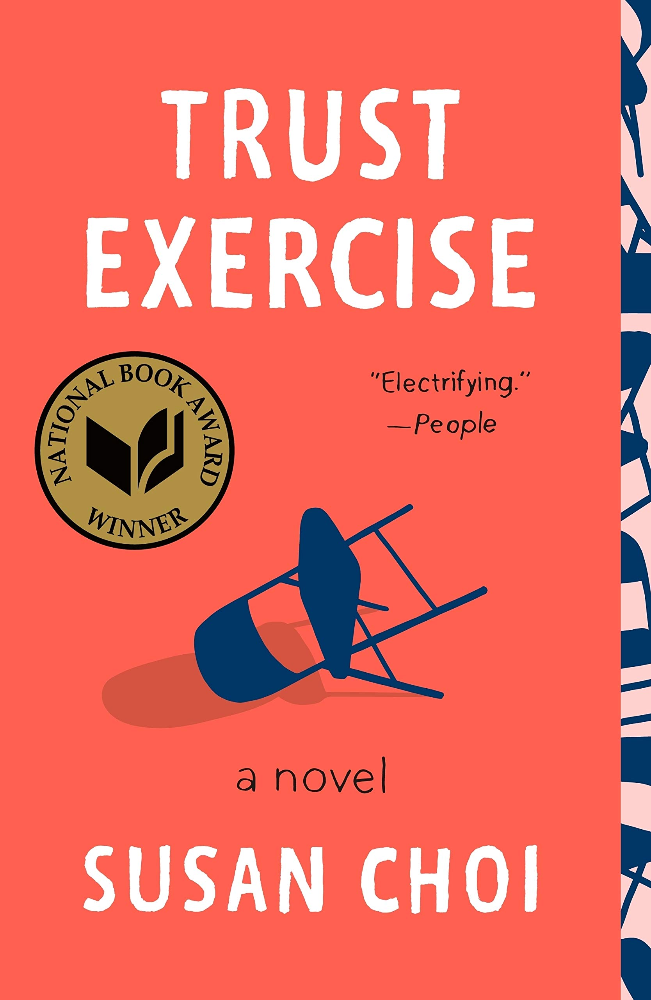

Trust Exercise
By: Susan Choi
1/5 Stars. Unfortunately this book did not work for me. If you like being miserable and don't like yourself though, I think it might work for you! This book is split into two halves, and the first half is so boring. I felt no connection to the characters, didn't enjoy the plot, and the writing was sub-par. I just wasn't given any reason to care about the story at all. The second half, while focused on a much more interesting character, was dependent on the (very boring) first half of the novel. It was just an all-around no from me.

The Word is Murder
By: Anthony Horowitz
3/5 Stars. I didn't think this book was going to be very good due to the combination of the awful author description on the back of the book, the larger font for the last name of the author on the cover, and the sheer amount of space this author's books take up on the shelf at Barnes and Noble. Anyone that writes that many books is sure to have a lot of failures. But contrary to my judgements, this book was pretty good! The mystery was quite intriguing (although it doesn't start feeling that way until about halfway through) and I didn't see the end coming. There are problems: why does the author self-insert himself in the book? Why is Hawethrone homophobic? Why do the last two pages exist? Problems aside, the mystery was pretty good.

Will My Cat Eat My Eyeballs?
By: Caitlyn Doughty
5/5 Stars. If I didn't want to be a librarian, I would want to be a mortician. I find death fasinating, and Doughty does not disappoint when it comes to questions about death. Will my cat eat my eyeballs? Do people really poop after they die? Why do people make noises after they die? My questions have now been answered.